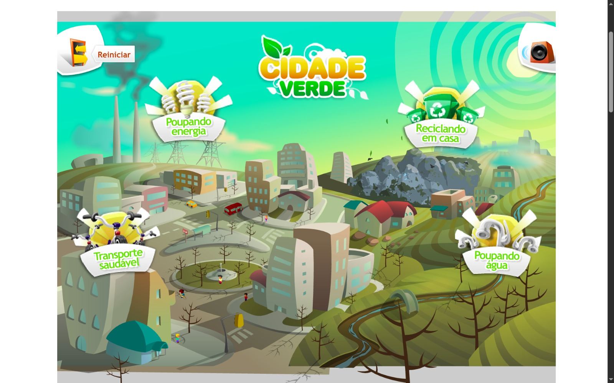
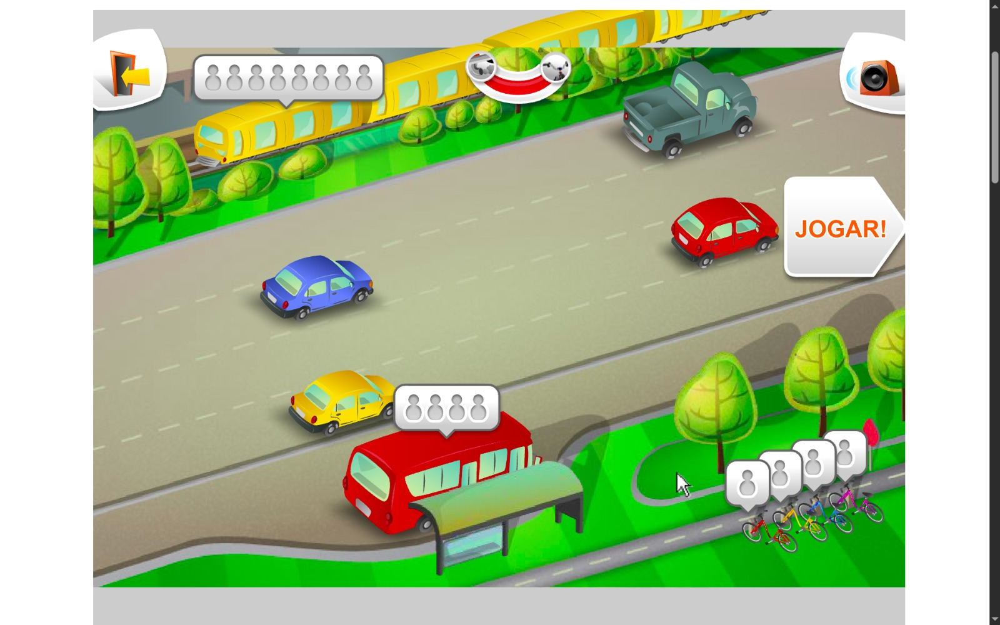
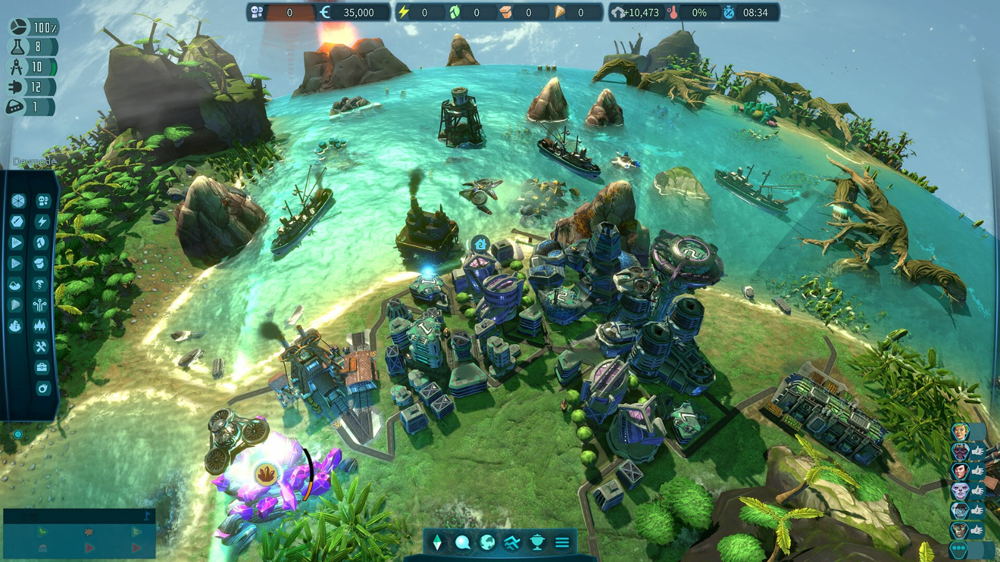
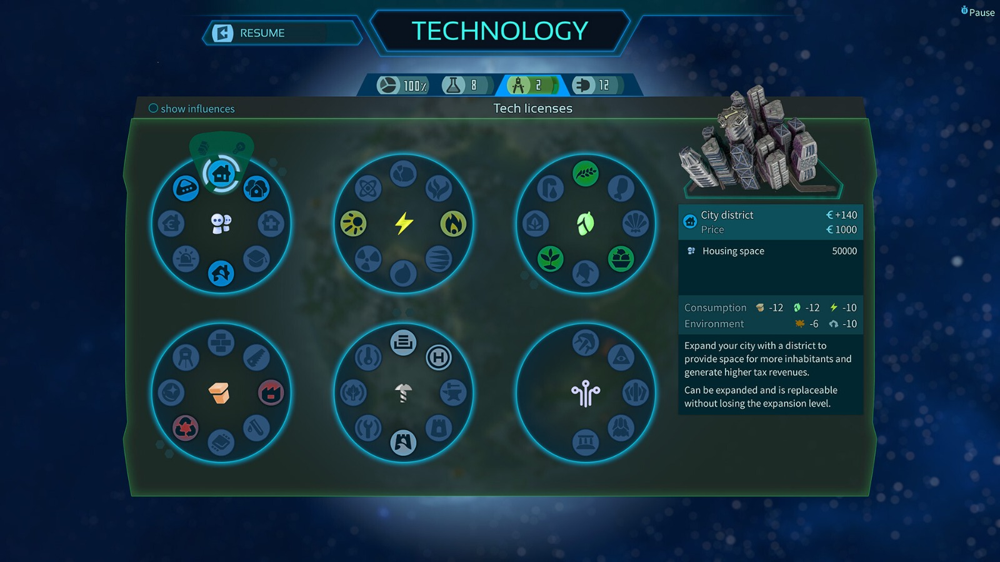
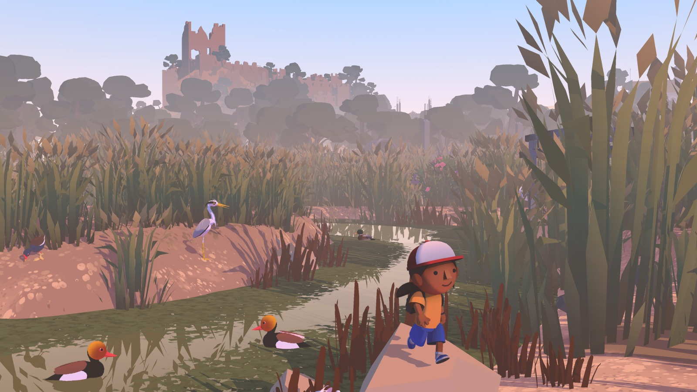
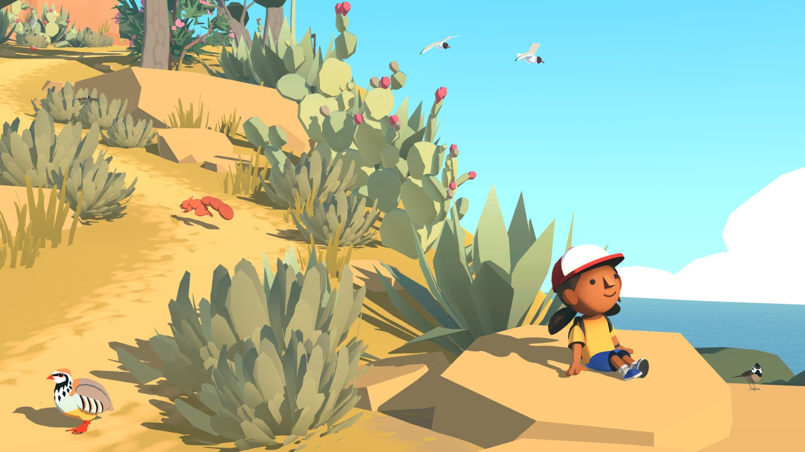
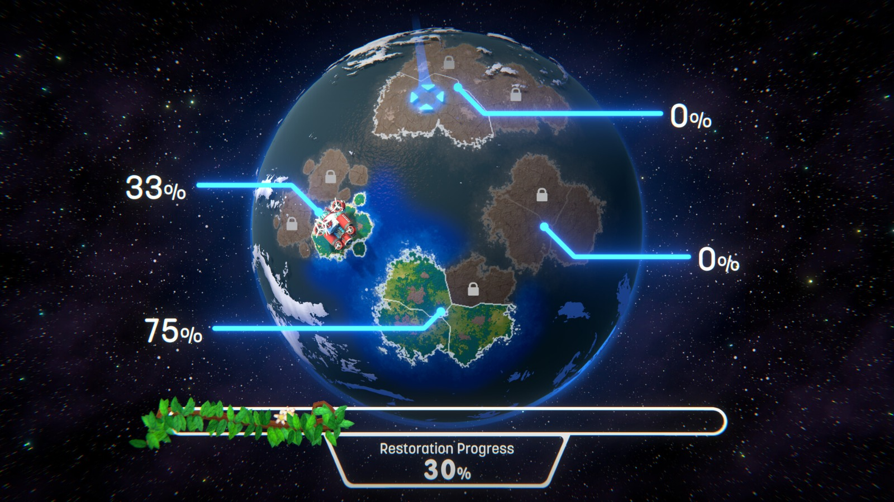
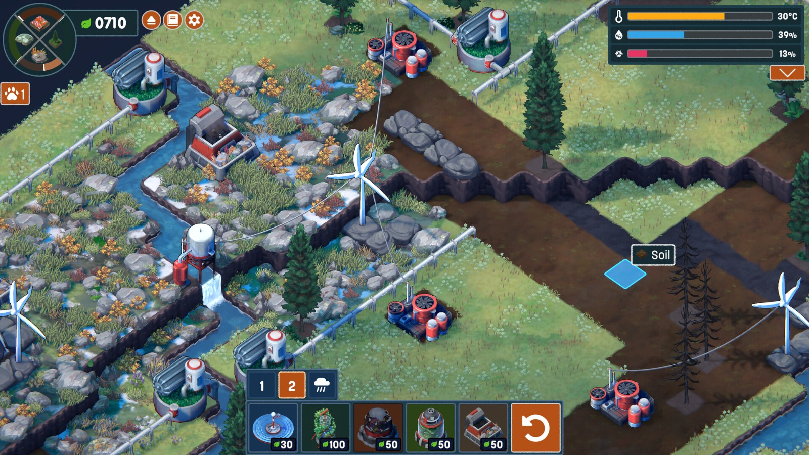
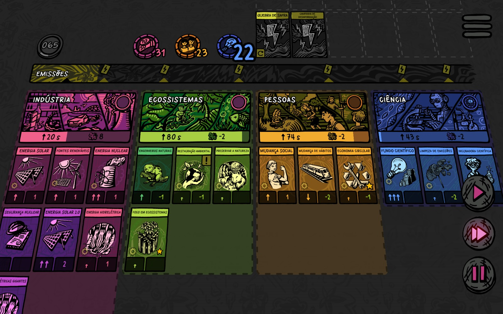
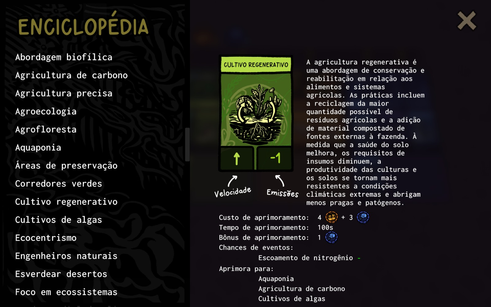

Recursos Educacionais
Uma coleção de materiais, artigos e informações sobre jogos ambientais e educação para a sustentabilidade.
Jogos Ambientais e Suas Abordagens
Cidade Verde
Esse jogo possui 4 modos (transporte saudável, poupando energia, reciclando em casa e poupando água), cada um com uma jogabilidade diferente envolvendo movimentação pelo teclado, cliques do mouse e microações variadas. Cada modo apresenta uma demonstração antes de começar para explicar o objetivo que deve ser realizado dentro de um limite de tempo.
Como aborda a questão ambiental?
O tema é explorado por meio de ações individuais como economia de água e energia, mostrando como pequenos hábitos ajudam a reduzir impactos ambientais. Ao final de cada modo, o jogo apresenta uma explicação sobre como aquela ação beneficia o meio ambiente.
Imagine Earth
Uma simulação de planeta em tempo real onde o jogador atua como gerente de colônias espaciais. É necessário explorar e povoar planetas distantes, equilibrando metas de lucro com preservação ambiental e condições de vida.
Como aborda a questão ambiental?
O jogo demonstra os desafios de um desenvolvimento econômico sustentável e evidencia as vantagens de seguir esse caminho. Faz bom uso das mecânicas para ensinar sobre equilíbrio ecológico e gestão responsável.
Alba: A Wildlife Adventure
A personagem Alba tenta preservar o ecossistema de uma ilha mediterrânea, ajudando animais e reunindo voluntários. O jogador explora um ambiente 3D para solucionar problemas ambientais e transformar o local em um paraíso ecológico.
Como aborda a questão ambiental?
O jogo valoriza o meio ambiente pela sua beleza e transmite a mensagem de que qualquer pessoa pode fazer a diferença. Ele reforça que mudar hábitos e ajudar a comunidade são atitudes poderosas.
Terra Nil
Um jogo de estratégia sobre transformar terras inférteis em ecossistemas equilibrados. O jogador deve purificar o solo, restaurar nascentes e depois remover qualquer vestígio de intervenção humana. A geração procedural cria paisagens únicas a cada partida.
Como aborda a questão ambiental?
O foco é completamente voltado à restauração ambiental, mostrando a importância da revitalização de rios, resurgimento de nascentes e recuperação de solos.
Beecarbonize
Um jogo de simulação por cartas onde o inimigo são as emissões de carbono. O jogador desenvolve tecnologias, aprova políticas, protege ecossistemas e moderniza a indústria usando recursos representados por moedas: capital, pessoas e ciência.
Como aborda a questão ambiental?
O jogo trabalha gestão de recursos e tomada de decisões para evitar crises como fome, aquecimento dos oceanos e desinformação ambiental, além de ensinar conceitos presentes nas cartas.